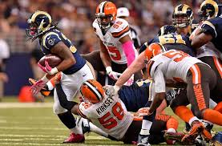

| Page Name | Page Link | |
|---|---|---|
| Browns | Rams/ | Super Bowl Odds/ |
| Page Name | Page Link |
The NFL is an extremely competitive league. Football is an extremely competitive sport. This year with a huge draft two teams that are usually rarely the topic of speech are the Cleveland Browns, in AFC North, and Los Angeles Rams, in NFC West. Except for this year, with genius trades and draft picks from both sides they went from a team to look over to currently undefeated or going from losing every game last season to being currently being 2-1-2. As the Rams are cleary and obvious Super Bowl contender to most football fans the browns are yet to earn that. Even with their weak record, with Baker Mayfield leading the team at the quarterback position I can see this team coming together and making it to the biggest stadium against the Rams.
